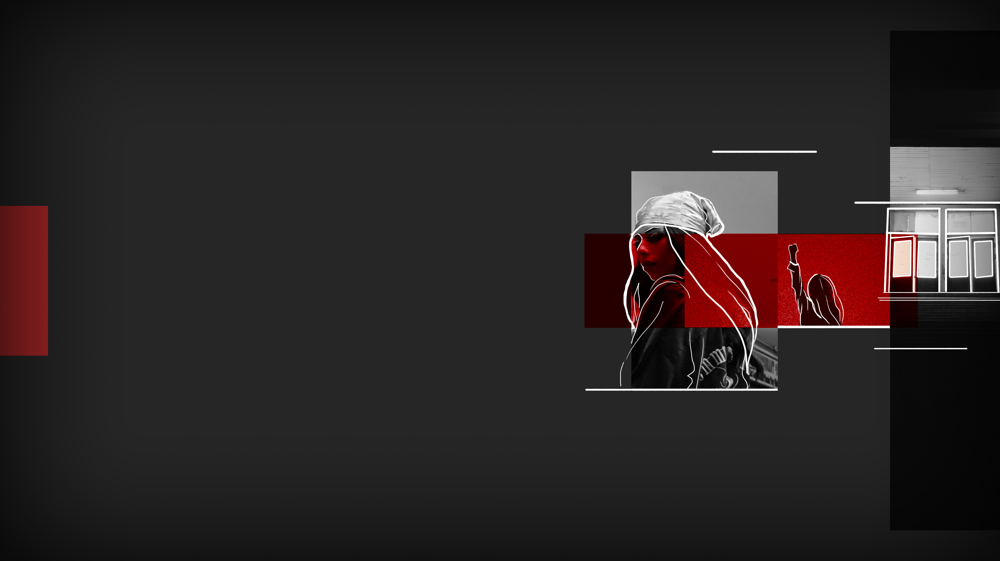

SPLITTED
SPLITTED

So I assume my most valuable asset whenever I want to get out of conversations like this: a sarcastic entitled smug. «Hi Lisa, did I forget us being friends?»
«Oh c'mon, red.» she smiles at me, trying to keep her cool.
«Don't call me red.»
«Okay, okay» she lifts her arms in defense «just... think about it? I know you care about this shit. This priest is controlling our parents and doing nothing to make things better for them, or us. I remember seeing your mother there once.»
«Oh, I see you are a passionate regular at the Mother Gloom's church.» I respond. Unfortunately, she doesn't seem interested in provocations today.
«Only to serve mother liberty instead, Nikki, you know it. C'mon, come with us.»